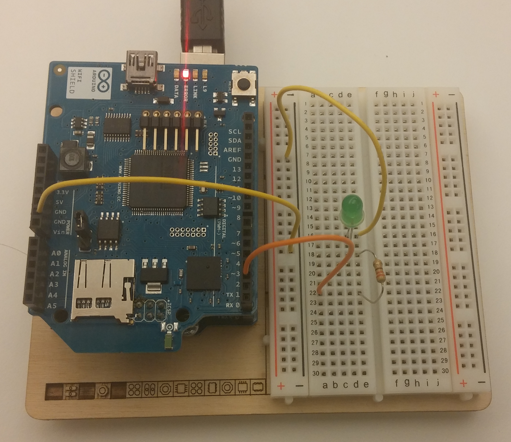

Arduino Scriptable
Arduino Scripting Example. This example shows how to make a scriptable app that blinks a LED on the Arduino. It is similar to the Arduino LED On/Off TCP Example, but this app has a user interface for scripting the Arduino.
The Arduino sketch used in this example is the same as in the Arduino LED On/Off TCP Example, and files arduinotcp.js, arduinowifi.ino and arduinoethernet.ino are also the same. For clarity, the instructions from the Arduino LED On/Off Example are repeated below.
In the user interface there is a text box that contains JavaScript code. When you touch the Run button, the script will execute on the device, sending commands to the Arduino board.

Source Code
You can browse the source code for this example at the Evothings GitHub repository
The file index.html is the entry point of the app. File arduinotcp.js contains functions for scripting the Arduino from JavaScript. You can set pin mode INPUT/OUTPUT as well as setting each pins' value to HIGH/LOW.
The file arduinowifi.ino contains the Arduino WiFi server that listens for commands from the app.
The file arduinoethernet.ino contains the Arduino Ethernet server that listens for commands from the app.
Default pin values run from 0 through 9, as pin 10-13 is reserved for the WiFi shield and not available. If you want to control other pins, feel free to modify the code to suit your needs.
What You Need
This example runs in Evothings Client on Android or iOS.
You need to run this example in the Evothings Client app. Alternatively, you can build a Cordova application if you wish to distribute the app. You then need to include the Cordova plugin org.chromium.socket. See page Evothings Client for further details.
For the Arduino setup, you need:
- WiFi shield or Ethernet shield
- LED
- Resistor 220 Ohm
Here is the sketch:

Here is a photo of a board configured to work with this example. Note that output pin 2 is used (it may look like pin 3 in the photo).
How To Get Up And Running
Follow these steps to get started with this example:
- Wire up the Arduino board, test by hot-wiring 5v to the LED anode (longer leg).
- Open arduinowifi.ino or arduinoethernet.ino in the Arduino development tool.
- Enter the name and password for your WiFi network in arduinowifi.ino or configure your IP-address in arduinoethernet.ino.
- Upload the program to the Arduino.
- Open the Arduino PC software's Serial Monitor Window and look for the IP address of the Arduino, it should pop up after a short negotiation. (If the IP address is not displayed, check your WiFi network's name and password.)
- Run the Evothings Workbench on your desktop/laptop computer.
- Run the Evothings client app on an Android mobile device (with WiFi enabled) and connect to the Workbench.
- Launch the example "Arduino Scriptable" from the Workbench window.
- Enter the IP-address of the Arduino in the app.
- If everything works, you should now be able to turn the LED on/off using the buttons in the app. If it does not work, check your wiring and that the right pins are used (remember pin 2 is used for output).
- Experiment with modifying the JavaScript code in the text box of the app. For example, you can change the blink interval (intervals under 500 ms may not work reliably).
- If you make an app for the Arduino, or make a video of your experiments, we would love to know about it!